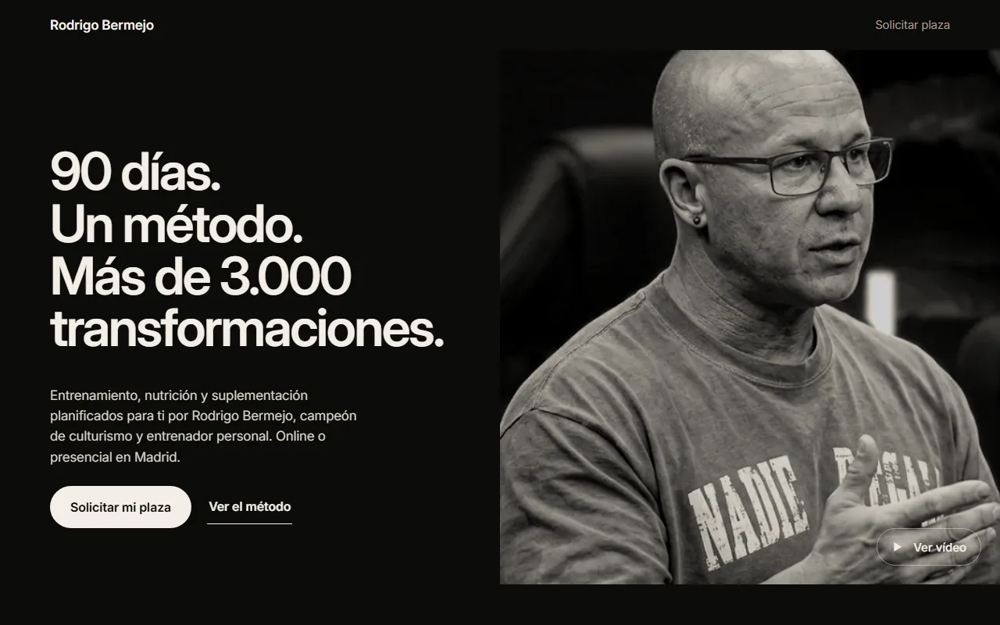
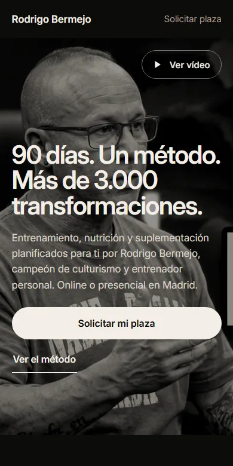
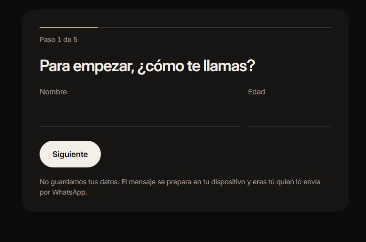
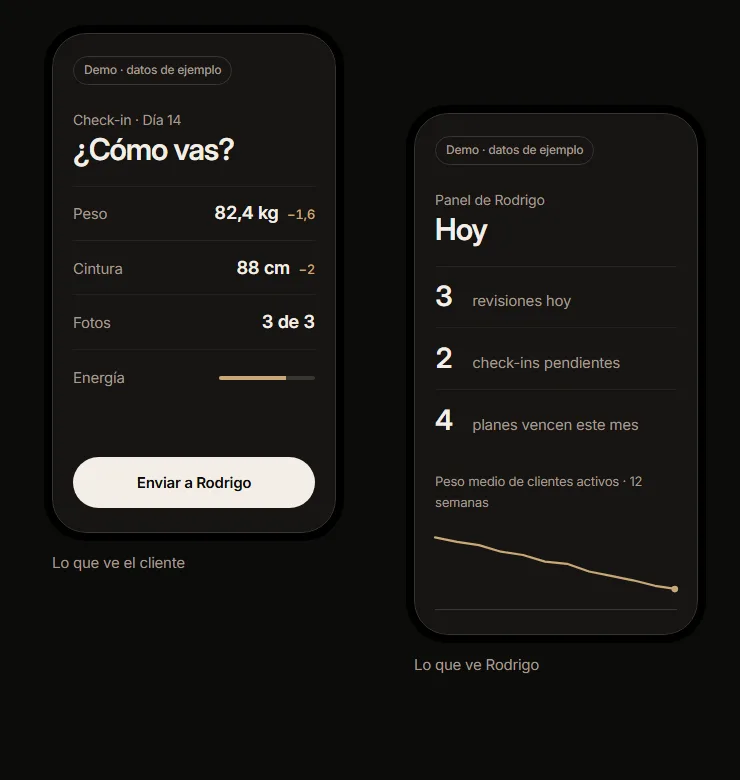

Consentimiento explícito
Antes de enviar fotos o medidas, cada cliente acepta por escrito para qué se usan: seguir su plan. Sin ese consentimiento, el portal no deja subirlas.

Rodrigo Bermejo
Propuesta de web, captación de clientes y portal privado para el Plan Fitness 90 Días.
Más de veinte años entrenando, títulos de culturismo y un plan de 90 días que funciona. Lo que hoy no está a la altura es el camino que recorre alguien desde que te descubre hasta que empieza contigo.
YouTube, Instagram y el boca a boca. Mucha gente llega con interés, pero no hay una página que convierta ese interés en una solicitud.
Mensajes sueltos por WhatsApp sin los datos básicos. Cada conversación empieza de cero: objetivo, peso, experiencia, días…
Fotos, pesos y medidas repartidos entre chats. Saber cómo va cada cliente depende de tu memoria.
Tu nivel es de primera; la imagen digital tiene que transmitir lo mismo antes de que hables con nadie.
Una sola página, pensada primero para el móvil, que cuenta quién eres, cómo funciona el método y termina en una solicitud. Ya la puedes ver funcionando.


Quien quiere empezar contesta cinco preguntas y se abre su WhatsApp con el mensaje escrito. Tú recibes los datos ordenados y decides en un minuto si le llamas.
Así te llega · ejemplo
Hola Rodrigo, quiero solicitar plaza en el Plan Fitness 90 Días. Nombre: Ana Edad: 34 Objetivo: Recomposición corporal Peso: 72,5 kg · Altura: 168 cm Experiencia: De 1 a 3 años Días disponibles: 4 por semana Modalidad: Online

Siguiente nivel, en la fase 2: respuesta automática con el enlace para reservar la valoración, y una hoja con todas las solicitudes para que ninguna se quede sin contestar.
Un portal privado donde cada cliente envía su check-in y tú ves la evolución de todos sin buscar entre chats.

Empezamos por lo que antes se nota: la página y las solicitudes. El portal llega cuando el flujo de clientes ya está en marcha.
La página de esta propuesta, con tus fotos, tus testimonios y tu dominio.
Plazo2 semanasInversión
Que ninguna solicitud se pierda y que reservar la valoración no dependa de ti.
Plazo2–3 semanasInversión
Check-ins, revisiones, planes y tu panel, con acceso privado para cada cliente.
Plazo6–8 semanasInversión
Plazos orientativos desde que recibimos fotos y textos. La inversión se detalla en la reunión, según el alcance final de cada fase.
Las fotos corporales, el peso y las medidas de tus clientes son datos de salud. El RGPD los considera una categoría especial (art. 9) y pide más garantías que para un simple correo.
Antes de enviar fotos o medidas, cada cliente acepta por escrito para qué se usan: seguir su plan. Sin ese consentimiento, el portal no deja subirlas.
Usar un antes y después en la web o en redes necesita un consentimiento aparte, específico y revocable. Por defecto, nada es público.
Solo se piden los datos que el plan necesita y se borran cuando el cliente lo pide o tras un plazo fijado al terminar la relación.
Cada cliente ve solo lo suyo. Tú ves lo de tus clientes. Las fotos se guardan cifradas y sin enlaces públicos.
Servidores en la Unión Europea y contrato de encargado del tratamiento con cada proveedor.
Acceso, rectificación, supresión y portabilidad, con un correo de contacto visible y una respuesta en el plazo legal de un mes.
La landing actual no guarda ningún dato: el formulario solo prepara un mensaje que el propio usuario envía por WhatsApp. Las obligaciones de esta página se aplican al portal (fase 3). Antes de lanzarlo conviene revisar los textos legales con un asesor de protección de datos.
Para pasar de la demo a tu página publicada solo necesitamos esto de tu parte.
Hablamos.